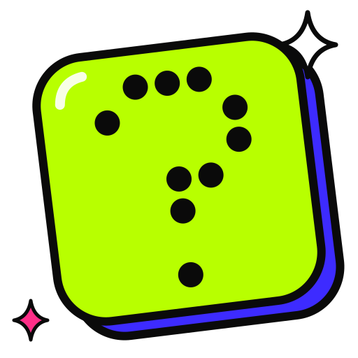

✦ DECIDE IL DADO ✦ NIENTE SONDAGGI ✦ DECIDE IL DADO ✦ NIENTE SONDAGGI
DOVE RAGA?ESITO #0427

HA
DE
CI
SO
SUSHI ✦ STASERA ✦ SUSHI ✦ STASERA ✦ SUSHI ✦ STASERA ✦ SUSHI
> SUSHI A 1,2 KM. IL DADO HA SCELTO:
Kawa Sushi Lab
TIRA ANCHE TU →lorebiri.github.io/dove-raga
Dati © contributori OpenStreetMap